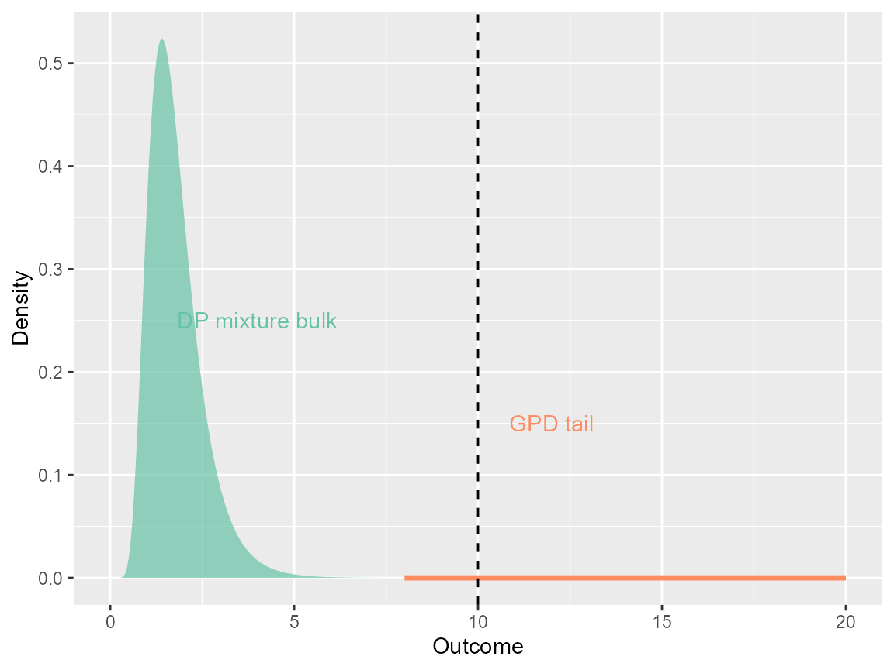
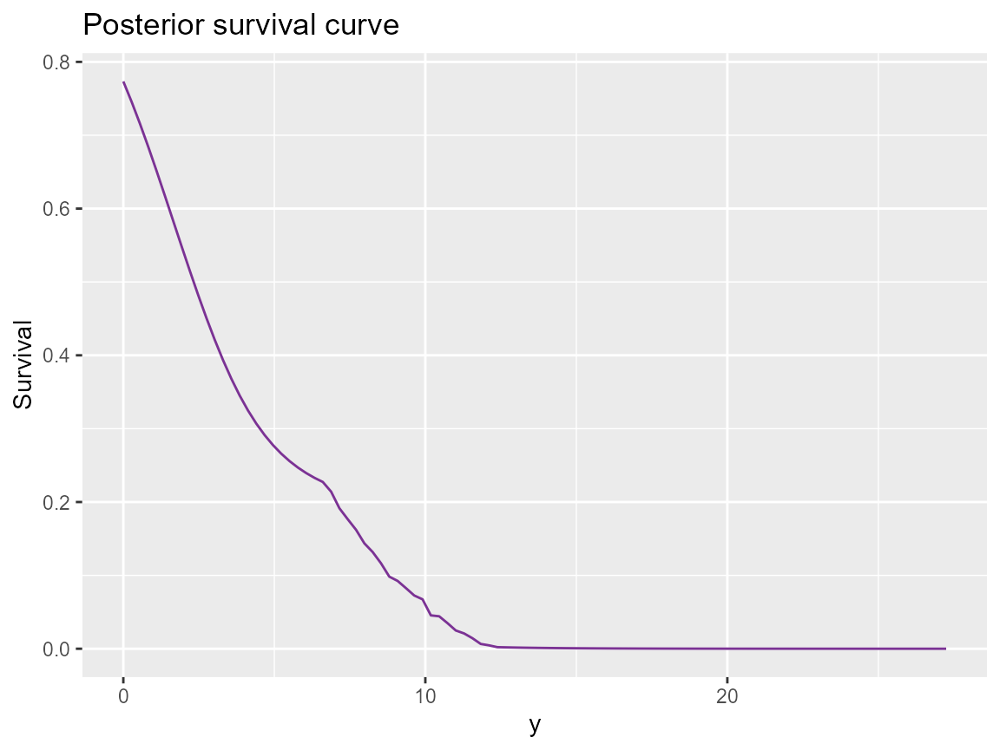

bulk <- data.frame(x = seq(0, 10, length.out = 200))
bulk$y <- dlnorm(bulk$x, meanlog = 0.5, sdlog = 0.4) * 0.8
tail <- data.frame(x = seq(8, 20, length.out = 3))
tail$y <- vapply(
tail$x,
DPmixGPD::dGpd,
numeric(1),
threshold = 10,
scale = 2,
shape = 0.3
)
ggplot() +
geom_area(data = bulk, aes(x = x, y = y), fill = "#66c2a5", alpha = 0.7) +
geom_line(data = tail, aes(x = x, y = y), color = "#fc8d62", size = 1.2) +
geom_vline(xintercept = 10, linetype = "dashed") +
annotate("text", x = 12, y = 0.15, label = "GPD tail", color = "#fc8d62") +
annotate("text", x = 4, y = 0.25, label = "DP mixture bulk", color = "#66c2a5") +
labs(x = "Outcome", y = "Density")
DPmixGPD concept: flexible bulk + GPD tail stitched at a threshold.
set.seed(7)
y <- sim_bulk_tail(90, tail_prob = 0.2)
J <- 6
if (use_cached_fit) {
fit <- fit_small
} else {
bundle <- build_nimble_bundle(
y = y,
backend = "sb",
kernel = "lognormal",
GPD = TRUE,
J = J,
mcmc = list(niter = 200, nburnin = 50, thin = 2, nchains = 2, seed = c(1, 2))
)
fit <- run_mcmc_bundle_manual(bundle)
}
print(fit)
#> MixGPD fit | backend: Stick-Breaking Process | kernel: Normal Distribution | GPD tail: FALSE
#> n = 80 | components = 3 | epsilon = 0.025
#> MCMC: niter=60, nburnin=20, thin=1, nchains=1
#> Fit
#> Use summary() for posterior summaries; plot() for diagnostics; predict() for predictions.
summary(fit, component = "tail")
#> MixGPD summary | backend: Stick-Breaking Process | kernel: Normal Distribution | GPD tail: FALSE | epsilon: 0.025
#> n = 80 | components = 3
#> Summary
#> Initial components: 3 | Components after truncation: 3
#>
#> Summary table
#> parameter mean sd q0.025 q0.500 q0.975 ess
#> weights[1] 0.638 0.081 0.524 0.625 0.775 3.535
#> weights[2] 0.211 0.033 0.150 0.212 0.251 8.389
#> weights[3] 0.154 0.055 0.049 0.162 0.225 3.421
#> alpha 1.945 0.818 0.575 1.904 3.341 13.115
#> mean[1] 1.150 0.154 0.876 1.144 1.404 9.376
#> mean[2] 5.956 3.400 2.343 6.970 11.420 15.873
#> mean[3] 6.067 3.332 2.530 3.815 11.671 13.235
#> sd[1] 3.027 1.226 1.385 2.780 5.462 8.118
#> sd[2] 1.110 1.316 0.023 0.059 3.947 3.470
#> sd[3] 1.356 1.652 0.029 0.587 5.270 15.139
pred <- predict(fit, type = "survival", y = seq(0, max(y) + 5, length.out = 100))
surv_df <- data.frame(y = pred$grid, survival = as.numeric(pred$fit[1, ]))
ggplot(surv_df, aes(x = y, y = survival)) +
geom_line(color = "#7b3294") +
labs(title = "Posterior survival curve", y = "Survival", x = "y")
Density prediction on held-out grid (posterior mean).
predict(fit, type = "quantile", p = c(.5, .8, .95))
#> $fit
#> [,1] [,2] [,3]
#> [1,] 2.444721 7.007227 9.279874
#>
#> $lower
#> NULL
#>
#> $upper
#> NULL
#>
#> $type
#> [1] "quantile"
#>
#> $grid
#> [1] 0.50 0.80 0.95
#>
#> $draws
#> , , 1
#>
#> [,1]
#> [1,] 2.084684
#> [2,] 1.761678
#> [3,] 1.711988
#> [4,] 2.488099
#> [5,] 2.076856
#> [6,] 1.980510
#> [7,] 1.814564
#> [8,] 2.015153
#> [9,] 2.182712
#> [10,] 2.031181
#> [11,] 2.258826
#> [12,] 2.569372
#> [13,] 2.218166
#> [14,] 2.193250
#> [15,] 2.682655
#> [16,] 2.117570
#> [17,] 2.296713
#> [18,] 2.129176
#> [19,] 2.790298
#> [20,] 2.822541
#> [21,] 3.457669
#> [22,] 2.982656
#> [23,] 2.594728
#> [24,] 2.355118
#> [25,] 2.245933
#> [26,] 2.183629
#> [27,] 1.964829
#> [28,] 2.134337
#> [29,] 2.835128
#> [30,] 2.387545
#> [31,] 2.352759
#> [32,] 3.252944
#> [33,] 3.306005
#> [34,] 2.716700
#> [35,] 2.742817
#> [36,] 2.507197
#> [37,] 2.553163
#> [38,] 3.063924
#> [39,] 3.017153
#> [40,] 2.908632
#>
#> , , 2
#>
#> [,1]
#> [1,] 5.434103
#> [2,] 9.856694
#> [3,] 7.732760
#> [4,] 7.231164
#> [5,] 8.626198
#> [6,] 5.481327
#> [7,] 8.434266
#> [8,] 4.275549
#> [9,] 7.318695
#> [10,] 5.642000
#> [11,] 6.912834
#> [12,] 6.270920
#> [13,] 5.346794
#> [14,] 5.415640
#> [15,] 8.022615
#> [16,] 5.277803
#> [17,] 6.506667
#> [18,] 9.289373
#> [19,] 7.052828
#> [20,] 7.175828
#> [21,] 7.620988
#> [22,] 7.014287
#> [23,] 8.075880
#> [24,] 7.732905
#> [25,] 7.006633
#> [26,] 4.351492
#> [27,] 4.285172
#> [28,] 5.359027
#> [29,] 7.743145
#> [30,] 5.187532
#> [31,] 6.846878
#> [32,] 8.544946
#> [33,] 8.320800
#> [34,] 8.421502
#> [35,] 9.363206
#> [36,] 8.034985
#> [37,] 6.841856
#> [38,] 7.803652
#> [39,] 6.801644
#> [40,] 7.628509
#>
#> , , 3
#>
#> [,1]
#> [1,] 6.929665
#> [2,] 9.958749
#> [3,] 7.866946
#> [4,] 7.291517
#> [5,] 8.695036
#> [6,] 7.824644
#> [7,] 8.576632
#> [8,] 10.926664
#> [9,] 11.449937
#> [10,] 10.852902
#> [11,] 9.323045
#> [12,] 9.995353
#> [13,] 11.011613
#> [14,] 8.606066
#> [15,] 10.157453
#> [16,] 9.665001
#> [17,] 10.551923
#> [18,] 9.373644
#> [19,] 7.118737
#> [20,] 7.219051
#> [21,] 8.991530
#> [22,] 8.422021
#> [23,] 8.245483
#> [24,] 10.600519
#> [25,] 9.030669
#> [26,] 11.626650
#> [27,] 12.137861
#> [28,] 11.299427
#> [29,] 10.045535
#> [30,] 11.666167
#> [31,] 10.016763
#> [32,] 8.981712
#> [33,] 10.616308
#> [34,] 8.548509
#> [35,] 9.463882
#> [36,] 8.134691
#> [37,] 6.925275
#> [38,] 7.877141
#> [39,] 7.447362
#> [40,] 7.722888
sessionInfo()
#> R version 4.5.2 (2025-10-31 ucrt)
#> Platform: x86_64-w64-mingw32/x64
#> Running under: Windows 11 x64 (build 26100)
#>
#> Matrix products: default
#> LAPACK version 3.12.1
#>
#> locale:
#> [1] LC_COLLATE=English_United States.utf8
#> [2] LC_CTYPE=English_United States.utf8
#> [3] LC_MONETARY=English_United States.utf8
#> [4] LC_NUMERIC=C
#> [5] LC_TIME=English_United States.utf8
#>
#> time zone: America/New_York
#> tzcode source: internal
#>
#> attached base packages:
#> [1] stats graphics grDevices datasets utils methods base
#>
#> other attached packages:
#> [1] ggplot2_4.0.1 nimble_1.4.0 DPmixGPD_0.0.8
#>
#> loaded via a namespace (and not attached):
#> [1] sass_0.4.10 future_1.68.0 generics_0.1.4
#> [4] renv_1.1.5 lattice_0.22-7 listenv_0.10.0
#> [7] pracma_2.4.6 digest_0.6.39 magrittr_2.0.4
#> [10] evaluate_1.0.5 grid_4.5.2 RColorBrewer_1.1-3
#> [13] fastmap_1.2.0 jsonlite_2.0.0 scales_1.4.0
#> [16] codetools_0.2-20 numDeriv_2016.8-1.1 textshaping_1.0.4
#> [19] jquerylib_0.1.4 cli_3.6.5 rlang_1.1.6
#> [22] parallelly_1.46.0 future.apply_1.20.1 withr_3.0.2
#> [25] cachem_1.1.0 yaml_2.3.12 otel_0.2.0
#> [28] tools_4.5.2 parallel_4.5.2 coda_0.19-4.1
#> [31] dplyr_1.1.4 globals_0.18.0 vctrs_0.6.5
#> [34] R6_2.6.1 lifecycle_1.0.4 fs_1.6.6
#> [37] htmlwidgets_1.6.4 ragg_1.5.0 pkgconfig_2.0.3
#> [40] desc_1.4.3 pkgdown_2.2.0 bslib_0.9.0
#> [43] pillar_1.11.1 gtable_0.3.6 glue_1.8.0
#> [46] systemfonts_1.3.1 tidyselect_1.2.1 tibble_3.3.0
#> [49] xfun_0.55 knitr_1.51 farver_2.1.2
#> [52] htmltools_0.5.9 igraph_2.2.1 labeling_0.4.3
#> [55] rmarkdown_2.30 compiler_4.5.2 S7_0.2.1